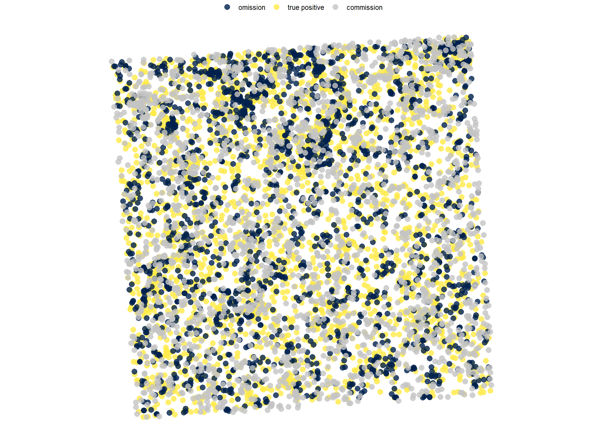
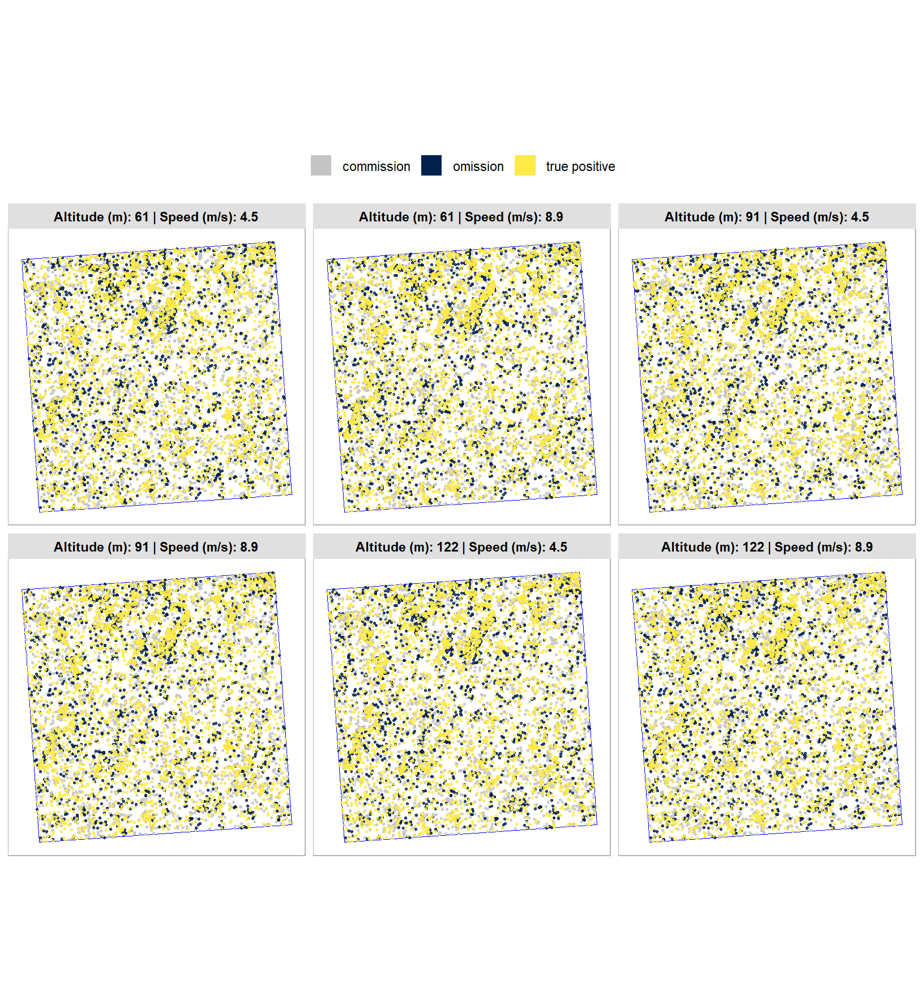

4 Accuracy Evaluation
In this section, we review the accuracy evaluation process and set up the functions and data needed to evaluate accuracy.
We evaluate the accuracy of the UAS-derived forest inventory based on:
- Detection Accuracy: tree-level instance segmentation matching pairing UAS-detected trees with stem-mapped field trees. The resulting True Positive, False Positive, and False Negative counts are used to calculate precision, recall, and F-score.
- Quantification Accuracy: tree-level accuracy of physical attributes of tree height and DBH for the successfully matched tree pairs. We use RMSE to capture typical error magnitude, MAPE to express relative precision as a percentage, and ME to quantify overestimation or underestimation of tree form.
- Stand-Level Accuracy: assessment of stand-level measurement accuracy that compares aggregated forest inventory metrics derived from the entire field inventory against all UAS-predicted trees. We calculate absolute bias and relative percent differences for stand basal area and trees per hectare across the different flight configurations to evaluate total structural summary performance.
We’ll follow Tinkham and Swayze (2021) and Tinkham and Woolsey (2024) who describe a methodology for matching UAS detected trees with stem mapped trees identified via traditional field methods. Note, detected trees in the excerpt below references UAS detected trees.
The UAS-SfM detected trees were matched with the field-inventoried trees through an iterative process…Within a data set, a UAS-SfM target tree was selected and intersected with all field trees within a 3 m radius and within 2 m in height of the target UAS tree location and height. If there were multiple matched field trees, then the tree closest in height was considered the True Positive match and the matched UAS and field trees were removed from further matching. The remining UAS and field trees were matched iteratively until no additional tree pairs could be identified using this process. If no field tree could be identified after this matching process, the UAS tree was considered a False Positive with any remaining unmatched field trees classified as False Negatives. (Tinkham and Woolsey 2024, p.7).
After performing instance matching, we’ll calculate detection accuracy metrics by aggregating raw true positive (TP), false positive (FP; commission), and false negative (FN; omission) counts to quantify the method’s ability to find the reference (ground truth; validation) trees. Then, based on the TP matches, we’ll quantify the
4.1 Detection Accuracy Functions
we’ll make a function that uses the following input data parameters to match predicted trees with validation/reference trees:
pred_data: predicted data point locations assfdataref_data: reference/validation/ground truth data point locations assfdatamax_dist_m: radius of search for matchingmax_height_error_m: maximum allowable difference in height for to be considered correct match
For instance matching using the point locations, we’ll use the RANN package which enables KD-tree searching/processing to build the tree which is a super-fast way to find the x number of near neighbors for each point in an input dataset (see RANN::nn2()).
Then, we’ll aggregate the instance matching results to evaluate omission rate (false negative rate or miss rate), commission rate (false positive rate), precision, recall (detection rate), and the F-score metric. As a reminder, true positive (TP) instances correctly match ground truth instances with a prediction, commission predictions do not match a ground truth instance (false positive; FP), and omissions are ground truth instances for which no predictions match (false negative; FN)
\[\textrm{omission rate} = \frac{FN}{TP+FN}\]
\[\textrm{commission rate} = \frac{FP}{TP+FP}\]
\[\textrm{precision} = \frac{TP}{TP+FP}\]
\[\textrm{recall} = \frac{TP}{TP+FN}\]
\[ \textrm{F-score} = 2 \times \frac{\bigl(precision \times recall \bigr)}{\bigl(precision + recall \bigr)} \]
###############################################################
###############################################################
###############################################################
###############################################################
# check df function
###############################################################
###############################################################
###############################################################
###############################################################
validate_df_fn <- function(data, required_cols = c("tree_height_m"), check_numeric = F) {
# check data
if(!inherits(data,"sf") && !inherits(data,"sfc")){stop("all input data requires POINT sf data")}
if(
!all( sf::st_is(data, c("POINT")) )
){
stop("all input data requires POINT sf data")
}
# names
# uses base::setdiff and base::names
missing_cols <- setdiff(required_cols, names(data))
if(length(missing_cols) > 0){
stop("all input data requires columns: ", paste(missing_cols, collapse = ", "))
}
# numeric
if(check_numeric){
non_numeric <- data %>%
sf::st_drop_geometry() %>%
dplyr::select(dplyr::all_of(required_cols)) %>%
dplyr::summarise(dplyr::across(dplyr::everything(), ~ !is.numeric(.x))) %>%
tidyr::pivot_longer(dplyr::everything()) %>%
dplyr::filter(value == TRUE)
if (nrow(non_numeric) > 0) {
stop("columns must be numeric: ", paste(non_numeric$name, collapse = ", "))
}
}
# is.na() catches both NA and NaN; is.infinite() catches Inf
invalid_dta <- data %>%
sf::st_drop_geometry() %>%
dplyr::summarise(
dplyr::across(
dplyr::all_of(required_cols)
, ~ sum(is.na(.x) | is.infinite(.x))
)
) %>%
tidyr::pivot_longer(
cols = dplyr::everything()
, names_to = "column"
, values_to = "count"
) %>%
dplyr::filter(count > 0)
if (nrow(invalid_dta) > 0) {
bad_cols <- paste(invalid_dta$column, collapse = ", ")
stop("invalid values (NA, NaN, or Inf) found in: ", bad_cols)
}
return(TRUE)
}
###############################################################
###############################################################
###############################################################
###############################################################
# match function
###############################################################
###############################################################
###############################################################
###############################################################
reference_prediction_match <- function(
pred_data
, ref_data
, max_dist_m
, max_height_error_m
) {
#######################################################################
# threshold checks
#######################################################################
if(
any(is.na(max_dist_m)) ||
any(is.null(max_dist_m)) ||
!inherits(as.numeric(max_dist_m),"numeric")
){
stop("`max_dist_m` must be numeric and not missing")
}else{max_dist_m <- as.numeric(max_dist_m)[1]}
if(
any(is.na(max_height_error_m)) ||
any(is.null(max_height_error_m)) ||
!inherits(as.numeric(max_height_error_m),"numeric")
){
stop("`max_height_error_m` must be numeric and not missing")
}else{max_height_error_m <- as.numeric(max_height_error_m)[1]}
#######################################################################
# data checks
#######################################################################
validate_df_fn(data = pred_data, required_cols = c("tree_height_m"), check_numeric = T)
validate_df_fn(data = ref_data, required_cols = c("tree_height_m"), check_numeric = T)
if(nrow(pred_data)==0 | nrow(ref_data)==0){
warning("no data so...?????")
return(NULL)
}
# proj
if(!identical(
sf::st_crs(pred_data, parameters = T)[["epsg"]]
, sf::st_crs(ref_data, parameters = T)[["epsg"]]
)){stop("data must have same projection. see `sf::st_crs()`")}
# sort to start with largest
pred_data <- pred_data %>%
dplyr::arrange(desc(tree_height_m)) %>%
dplyr::mutate(pred_match_idx = dplyr::row_number())
ref_data <- ref_data %>%
dplyr::arrange(desc(tree_height_m)) %>%
dplyr::mutate(ref_match_idx = dplyr::row_number())
#######################################################################
# build a 2D kd-tree
#######################################################################
# Use the X and Y coordinates of the predicted to build the tree.
pred_coords_temp <-
pred_data %>%
dplyr::mutate(
X = sf::st_coordinates(.)[,1] %>% as.numeric()
, Y = sf::st_coordinates(.)[,2] %>% as.numeric()
) %>%
dplyr::select(X,Y) %>%
sf::st_drop_geometry()
# Use the X and Y coordinates of the reference to build the tree.
ref_coords_temp <-
ref_data %>%
dplyr::mutate(
X = sf::st_coordinates(.)[,1] %>% as.numeric()
, Y = sf::st_coordinates(.)[,2] %>% as.numeric()
) %>%
dplyr::select(X,Y) %>%
sf::st_drop_geometry()
# perform a fixed-radius search using RANN::nn2
nn_ans_temp <- RANN::nn2(
# the point cloud xy data (builds the kd-tree on this)
data = pred_coords_temp
# the seed point xy data (number of columns must be the same as data)
, query = ref_coords_temp
# maximum number of neighbors to find per query
, k = min(nrow(pred_coords_temp),nrow(ref_coords_temp))
# the search radius (rcyl)
, radius = max_dist_m
, searchtype = "radius"
)
# huh?
# nn_ans_temp %>% class()
# nn_ans_temp %>% names()
# nn_ans_temp$nn.idx %>% nrow()
# nrow(ref_coords_temp)
# nn_ans_temp$nn.idx %>% ncol()
# nrow(pred_coords_temp)
# nn_ans_temp$nn.dists %>% nrow()
# nrow(ref_coords_temp)
# nn_ans_temp$nn.dists %>% ncol()
# nrow(pred_coords_temp)
# nn_ans_temp$nn.dists[1:11,] %>% dplyr::as_tibble() %>% dplyr::glimpse()
#######################################################################
# iterate through the kd-tree to make matches
#######################################################################
if(nrow(ref_coords_temp)!=nrow(ref_data)){stop("bad kd-tree")}
# add pred match tracker
ref_data$pred_match_idx <- 0
ref_data$pred_match_height_diff_m <- as.numeric(NA)
ref_data$pred_tree_height_m <- as.numeric(NA)
ref_data$pred_match_dist_m <- as.numeric(NA)
for(i in 1:nrow(ref_coords_temp)){
# get indices of points in the current cylinder (0 means no point found)
nn_idx_pts <- nn_ans_temp$nn.idx[i, ]
cyl_pts <- nn_idx_pts[nn_idx_pts > 0]
# remove already matched
cyl_pts <- cyl_pts[!(cyl_pts %in% ref_data$pred_match_idx)]
# if available matches
if(dplyr::coalesce(length(cyl_pts),0) >= 1) {
# get heights
# ref_data %>% dplyr::select(field_tree_id, tree_height_m) %>% dplyr::glimpse()
# ref_data$tree_height_m[i]
# pred_data$tree_height_m[cyl_pts]
ht_diffs <- abs(ref_data$tree_height_m[i]-pred_data$tree_height_m[cyl_pts])
# get the minimum value among elements below the threshold
min_val <- min(ht_diffs[ht_diffs <= max_height_error_m], na.rm = T)
# if not none within threshold
if(!is.infinite(min_val)){
# the index of that value in the original full vector
cyl_idx <- which(ht_diffs == min_val)[1] # if multiple matches, takes the nearest
match_idx <- cyl_pts[cyl_idx]
# distance
nn_dist_idx <- which(nn_idx_pts == match_idx)
nn_dist <- nn_ans_temp$nn.dists[i,nn_dist_idx]
# update match
ref_data$pred_match_height_diff_m[i] <- min_val
ref_data$pred_tree_height_m[i] <- pred_data$tree_height_m[match_idx]
ref_data$pred_match_idx[i] <- match_idx
ref_data$pred_match_dist_m[i] <- nn_dist
}
}
}
#######################################################################
# add ref id to pred and return
#######################################################################
# pred_data %>% dplyr::glimpse()
# ref_data %>% dplyr::glimpse()
pred_data <- pred_data %>%
# get rid of columns we'll create
dplyr::select( -dplyr::any_of(c(
"hey_xxxxxxxxxx"
, "pred_match_height_diff_m"
, "pred_match_dist_m"
, "ref_tree_height_m"
, "ref_match_idx"
))) %>%
dplyr::left_join(
ref_data %>%
sf::st_drop_geometry() %>%
dplyr::select(ref_match_idx, pred_match_idx, pred_match_height_diff_m, pred_match_dist_m, tree_height_m) %>%
dplyr::rename(ref_tree_height_m=tree_height_m)
, by = "pred_match_idx"
)
return(list(
ref_data = ref_data
, pred_data = pred_data
))
}
###############################################################
###############################################################
###############################################################
###############################################################
# combine match to classify reference/predictions
###############################################################
###############################################################
###############################################################
###############################################################
ground_truth_prediction_match <- function(
reference_prediction_match_ans
, comp_cols = c("tree_height_m")
) {
# check for comparison cols
comp_cols <-
comp_cols %>%
# remove whitespace
stringr::str_trim() %>%
# keep only those with a value
stringr::str_subset(".")
if(inherits(comp_cols, "character") && length(comp_cols) > 0){
validate_df_fn(data = reference_prediction_match_ans$ref_data, required_cols = comp_cols, check_numeric = T)
validate_df_fn(data = reference_prediction_match_ans$pred_data, required_cols = comp_cols, check_numeric = T)
}
# tp matches
return_df <-
reference_prediction_match_ans$ref_data %>%
dplyr::filter(pred_match_idx!=0 & !is.na(pred_match_idx)) %>%
dplyr::select(dplyr::all_of(c(
"ref_match_idx"
, "pred_match_idx"
, "pred_match_dist_m"
# , "pred_tree_height_m"
# , "tree_height_m"
, comp_cols
))) %>%
dplyr::rename_with(
.cols = dplyr::all_of(comp_cols)
, .fn = ~paste0("ref_", .x, recycle0 = T)
) %>%
sf::st_set_geometry("ref_geometry") %>%
# add on pred geom
dplyr::inner_join(
reference_prediction_match_ans$pred_data %>%
dplyr::select(dplyr::all_of(c(
"ref_match_idx"
, comp_cols
))) %>%
dplyr::rename_with(
.cols = dplyr::all_of(comp_cols)
, .fn = ~paste0("pred_", .x, recycle0 = T)
) %>%
dplyr::mutate(pred_geometry = sf::st_geometry(.)) %>%
sf::st_drop_geometry()
, by = "ref_match_idx"
) %>%
dplyr::mutate(match_grp = "true positive")
# add omissions
return_df <-
return_df %>%
dplyr::bind_rows(
reference_prediction_match_ans$ref_data %>%
dplyr::filter(pred_match_idx==0 | is.na(pred_match_idx)) %>%
dplyr::select(dplyr::all_of(c(
"ref_match_idx"
, "pred_match_idx"
, "pred_match_dist_m"
# , "pred_tree_height_m"
# , "tree_height_m"
, comp_cols
))) %>%
dplyr::rename_with(
.cols = dplyr::all_of(comp_cols)
, .fn = ~paste0("ref_", .x, recycle0 = T)
) %>%
sf::st_set_geometry("ref_geometry") %>%
dplyr::mutate(match_grp = "omission")
)
# add commissions
return_df <-
return_df %>%
dplyr::bind_rows(
reference_prediction_match_ans$pred_data %>%
dplyr::filter(ref_match_idx==0 | is.na(ref_match_idx)) %>%
dplyr::select(dplyr::all_of(c(
"ref_match_idx"
, "pred_match_idx"
, "pred_match_dist_m"
# , "pred_tree_height_m"
# , "tree_height_m"
, comp_cols
))) %>%
dplyr::rename_with(
.cols = dplyr::all_of(comp_cols)
, .fn = ~paste0("pred_", .x, recycle0 = T)
) %>%
dplyr::mutate(pred_geometry = sf::st_geometry(.)) %>%
sf::st_drop_geometry() %>%
dplyr::mutate(match_grp = "commission")
)
# make match_grp factor
return_df <- return_df %>%
dplyr::mutate(
match_grp = factor(
match_grp
, ordered = T
, levels = c(
"true positive"
, "commission"
, "omission"
)
) %>% forcats::fct_rev()
)
if(inherits(comp_cols, "character") && length(comp_cols) > 0){
return_df <-
return_df %>%
dplyr::mutate(
# 'diff_' columns are calculated as the predicted value minus the actual value
dplyr::across(
.cols = paste0(
"ref_"
, comp_cols # c("tree_height_m", "dbh_cm")
, recycle0 = T
)
, .fns = ~ base::get(stringr::str_replace(dplyr::cur_column(), "^ref_", "pred_")) - .x
, .names = "diff_{stringr::str_remove(.col, '^ref_')}"
)
# 'pct_diff_' columns are calculated as the actual value minus the predicted value divided by the actual value
, dplyr::across(
.cols = paste0(
"ref_"
, comp_cols # c("tree_height_m", "dbh_cm")
, recycle0 = T
)
, .fns = ~ (.x-base::get(stringr::str_replace(dplyr::cur_column(), "^ref_", "pred_")))/.x
, .names = "pct_diff_{stringr::str_remove(.col, '^ref_')}"
)
)
}
# return
if(nrow(return_df)==0){
warning("no records found for ground truth to predition matching")
return(NULL)
}else{
return(return_df)
}
}4.1.1 Example: Instance Match
here, we’ll demonstrate usage of the reference_prediction_match() and ground_truth_prediction_match() functions and what they return
the reference_prediction_match() function takes the point data of the predicted and reference tree locations and performs the instance segmentation routine described above, returning the input point location data with links to the other data. It is more of an intermediate function to be used by the developer, but we’ll check it out anyway since the next function, ground_truth_prediction_match(), relies on it’s output as input.
reference_prediction_match_ans_temp <- reference_prediction_match(
pred_data = predicted_trees[[2]]
, ref_data = validation_trees %>% dplyr::rename(tree_height_m=field_tree_height_m, dbh_cm=field_dbh_cm)
, max_dist_m = 3
, max_height_error_m = 2
)
# wha?
reference_prediction_match_ans_temp$ref_data %>% dplyr::glimpse()## Rows: 5,217
## Columns: 27
## $ field_tree_id <int> 2076, 2968, 2483, 1201, 2036, 2969, 2649, 268…
## $ tag_2024 <dbl> 694, 1327, 963, 374, 669, 1328, 1092, 1111, 2…
## $ sect <dbl> 29, 52, 39, 15, 28, 52, 43, 44, 7, 16, 25, 10…
## $ northing <dbl> 4330830, 4330722, 4330824, 4330862, 4330838, …
## $ easting <dbl> 490262.7, 490048.1, 490251.1, 490128.5, 49021…
## $ ns <dbl> 710.2, 405.0, 692.9, 844.5, 748.0, 414.1, 521…
## $ ew <dbl> 870.8, 144.0, 831.6, 438.9, 722.6, 144.5, 252…
## $ spp <chr> "Pipo", "Pipo", "Pipo", "Pipo", "Pipo", "Pipo…
## $ status_24 <chr> "sd", "a", "a", "a", "a", "a", "a", "a", "a",…
## $ field_dbh_in <dbl> 19.3, 24.2, 18.0, 23.8, 22.7, 23.4, 17.6, 22.…
## $ field_tree_height_ft <dbl> 87.5, 86.5, 86.0, 85.0, 85.0, 84.5, 84.0, 84.…
## $ lll_24 <chr> "NA", "46.5", "18", "11.5", "38", "47", "14",…
## $ height_defect <chr> NA, NA, NA, NA, NA, NA, NA, NA, NA, NA, NA, N…
## $ field_check <chr> NA, NA, NA, NA, NA, NA, NA, NA, NA, NA, NA, N…
## $ comments_24 <chr> NA, NA, NA, NA, NA, NA, NA, NA, NA, NA, NA, N…
## $ dbh_cm <dbl> 48.98477, 61.42132, 45.68528, 60.40609, 57.61…
## $ tree_height_m <dbl> 26.66870, 26.36391, 26.21152, 25.90674, 25.90…
## $ stand_area_m2 <dbl> 92941.05, 92941.05, 92941.05, 92941.05, 92941…
## $ geometry <POINT [m]> POINT (490262.7 4330830), POINT (490048…
## $ tree_utm_x <dbl> 490262.7, 490048.1, 490251.1, 490128.5, 49021…
## $ tree_utm_y <dbl> 4330830, 4330722, 4330824, 4330862, 4330838, …
## $ basal_area_m2 <dbl> 0.18845691, 0.29629762, 0.16392396, 0.2865836…
## $ ref_match_idx <int> 1, 2, 3, 4, 5, 6, 7, 8, 9, 10, 11, 12, 13, 14…
## $ pred_match_idx <dbl> 5, 1, 3, 13, 25, 2, 14, 10, 41, 4, 9, 69, 7, …
## $ pred_match_height_diff_m <dbl> 0.40339782, 1.00058660, 0.77597836, 0.5250352…
## $ pred_tree_height_m <dbl> 26.2653, 27.3645, 26.9875, 25.3817, 25.0128, …
## $ pred_match_dist_m <dbl> 2.63477069, 1.44906125, 2.52125757, 2.7179678…## Rows: 5,569
## Columns: 23
## $ treeID <chr> "7138_490048.9_4330722.9", "7063_490048.4_43…
## $ tree_height_m <dbl> 27.3645, 27.0297, 26.9875, 26.5469, 26.2653,…
## $ crown_area_m2 <dbl> 58.8125, 35.5625, 46.4375, 77.1875, 43.9375,…
## $ fia_est_dbh_cm <dbl> 53.01300, 52.57816, 52.16558, 51.73171, 51.3…
## $ fia_est_dbh_cm_lower <dbl> 31.80116, 31.54692, 31.04730, 30.89588, 30.9…
## $ fia_est_dbh_cm_upper <dbl> 81.15656, 80.53836, 80.47719, 79.57000, 79.0…
## $ dbh_cm <dbl> 53.01300, 52.57816, 52.16558, 51.73171, 51.3…
## $ is_training_data <lgl> FALSE, FALSE, FALSE, FALSE, FALSE, FALSE, FA…
## $ dbh_m <dbl> 0.5301300, 0.5257816, 0.5216558, 0.5173171, …
## $ radius_m <dbl> 0.2650650, 0.2628908, 0.2608279, 0.2586585, …
## $ basal_area_m2 <dbl> 0.2207266, 0.2171204, 0.2137263, 0.2101859, …
## $ basal_area_ft2 <dbl> 2.375901, 2.337084, 2.300550, 2.262441, 2.23…
## $ ptcld_extracted_dbh_cm <dbl> NA, NA, NA, NA, NA, NA, NA, NA, NA, NA, NA, …
## $ ptcld_predicted_dbh_cm <dbl> NA, NA, NA, NA, NA, NA, NA, NA, NA, NA, NA, …
## $ stand_area_m2 <dbl> 92941.05, 92941.05, 92941.05, 92941.05, 9294…
## $ las_overlap_stand_area_m2 <dbl> 92941.05, 92941.05, 92941.05, 92941.05, 9294…
## $ is_in_stand <lgl> TRUE, TRUE, TRUE, TRUE, TRUE, TRUE, TRUE, TR…
## $ pred_match_idx <dbl> 1, 2, 3, 4, 5, 6, 7, 8, 9, 10, 11, 12, 13, 1…
## $ ref_match_idx <int> 2, 6, 3, 10, 1, 32, 13, 19, 11, 8, NA, NA, 4…
## $ pred_match_height_diff_m <dbl> 1.00058660, 1.27535614, 0.77597836, 1.249734…
## $ pred_match_dist_m <dbl> 1.4490612, 0.9871381, 2.5212576, 0.8874961, …
## $ ref_tree_height_m <dbl> 26.36391, 25.75434, 26.21152, 25.29717, 26.6…
## $ geom <POINT [m]> POINT (490048.9 4330723), POINT (49004…the ground_truth_prediction_match() uses the output from reference_prediction_match() and creates a nice, clean data frame with the instances classified as TP, FP, or FN for use in aggregating to calculate detection accuracy metrics. Optionally, users can set the foundation for quantification accuracy assessment via the comp_cols argument (see the diff_* and pct_diff_* columns in the output)
gt_temp <- ground_truth_prediction_match(
reference_prediction_match_ans = reference_prediction_match_ans_temp
, comp_cols = c("tree_height_m", "dbh_cm")
)
# huh?
gt_temp %>% dplyr::glimpse()## Rows: 7,487
## Columns: 14
## $ ref_match_idx <int> 1, 2, 3, 4, 5, 6, 7, 8, 9, 10, 11, 12, 13, 14, …
## $ pred_match_idx <dbl> 5, 1, 3, 13, 25, 2, 14, 10, 41, 4, 9, 69, 7, 59…
## $ pred_match_dist_m <dbl> 2.63477069, 1.44906125, 2.52125757, 2.71796783,…
## $ ref_tree_height_m <dbl> 26.66870, 26.36391, 26.21152, 25.90674, 25.9067…
## $ ref_dbh_cm <dbl> 48.98477, 61.42132, 45.68528, 60.40609, 57.6142…
## $ pred_tree_height_m <dbl> 26.2653, 27.3645, 26.9875, 25.3817, 25.0128, 27…
## $ pred_dbh_cm <dbl> 51.38685, 53.01300, 52.16558, 50.06527, 49.2155…
## $ match_grp <ord> true positive, true positive, true positive, tr…
## $ ref_geometry <POINT [m]> POINT (490262.7 4330830), POINT (490048.1…
## $ pred_geometry <POINT [m]> POINT (490261.9 4330827), POINT (490048.9…
## $ diff_tree_height_m <dbl> -0.40339782, 1.00058660, 0.77597836, -0.5250352…
## $ diff_dbh_cm <dbl> 2.4020787, -8.4083178, 6.4802991, -10.3408177, …
## $ pct_diff_tree_height_m <dbl> 0.015126266, -0.037952886, -0.029604477, 0.0202…
## $ pct_diff_dbh_cm <dbl> -0.04903725, 0.13689575, -0.14184655, 0.1711883…this is neat, we have the geometry of both the reference and prediction trees as well as the difference between the metric columns we gave the function via the comp_cols argument
let’s use the different geometries to plot the instance matching classification
# custom palette
pal_match_grp = c(
"omission"=viridis::cividis(3)[1]
# , "commission"= viridis::cividis(3)[2]
, "commission"= "gray77"
, "true positive"=viridis::cividis(3)[3]
)
# scales::show_col(pal_match_grp)
# plt
ggplot2::ggplot() +
ggplot2::geom_sf(
data = gt_temp %>% dplyr::filter(match_grp %in% c("true positive","omission"))
, mapping = ggplot2::aes(geometry = ref_geometry, color = match_grp)
, size = 3, alpha = 0.8
) +
ggplot2::geom_sf(
data = gt_temp %>% dplyr::filter(match_grp=="commission")
, mapping = ggplot2::aes(geometry = pred_geometry, color = match_grp)
, size = 3, alpha = 0.8
) +
ggplot2::scale_color_manual(values = pal_match_grp) +
ggplot2::theme_void() +
ggplot2::theme(legend.position = "top", legend.title = ggplot2::element_blank()) 
4.1.2 Example: Detection Accuracy
let’s make a function to calculate the detection accuracy metrics based on aggregated TP, FP, and FN counts
###############################################################
###############################################################
###############################################################
###############################################################
# first function takes df with cols tp_n, fp_n, and fn_n to calculate rates
###############################################################
###############################################################
###############################################################
###############################################################
confusion_matrix_scores_fn <- function(df) {
df %>%
dplyr::mutate(
omission_rate = dplyr::case_when(
dplyr::coalesce(tp_n,0) == 0 & dplyr::coalesce(fn_n,0) == 0 ~ 0 # if there are no actual trees, there is nothing to miss
, dplyr::coalesce(tp_n,0) == 0 & dplyr::coalesce(fn_n,0) > 0 ~ 1 # every single actual tree was missed
, dplyr::coalesce(fn_n,0) == 0 & dplyr::coalesce(tp_n,0) > 0 ~ 0
, T ~ fn_n/(tp_n+fn_n)
) # False Negative Rate or Miss Rate
, commission_rate = dplyr::case_when(
dplyr::coalesce(tp_n,0) == 0 & dplyr::coalesce(fp_n,0) == 0 ~ 0 # if no predictions are made, the model could not have made any commission errors
, dplyr::coalesce(fp_n,0) == 0 & dplyr::coalesce(tp_n,0) > 0 ~ 0
, T ~ fp_n/(tp_n+fp_n)
) # False Positive Rate
, precision = dplyr::case_when(
dplyr::coalesce(tp_n,0) == 0 & dplyr::coalesce(fp_n,0) == 0 ~ 1 # if no predictions are made, the model made zero incorrect positive claims
, dplyr::coalesce(tp_n,0) == 0 & dplyr::coalesce(fp_n,0) > 0 ~ 0
, T ~ tp_n/(tp_n+fp_n)
)
, recall = dplyr::case_when(
dplyr::coalesce(tp_n,0) == 0 & dplyr::coalesce(fn_n,0) == 0 ~ 1 # if there are no actual trees, there is nothing to miss
, dplyr::coalesce(tp_n,0) == 0 & dplyr::coalesce(fn_n,0) > 0 ~ 0 # every single actual tree was missed
, T ~ tp_n/(tp_n+fn_n)
)
, f_score = dplyr::case_when(
dplyr::coalesce(precision,0) == 0 | dplyr::coalesce(recall,0) == 0 ~ 0
, T ~ 2 * ( (precision*recall)/(precision+recall) )
)
)
}
###############################################################
###############################################################
###############################################################
###############################################################
# aggregate results from ground_truth_prediction_match()
###############################################################
###############################################################
###############################################################
###############################################################
agg_ground_truth_match <- function(ground_truth_prediction_match_ans) {
if(nrow(ground_truth_prediction_match_ans)==0){return(NULL)}
if( !(names(ground_truth_prediction_match_ans) %>% stringr::str_equal("match_grp") %>% any()) ){stop("ground_truth_prediction_match_ans must contain `match_grp` column")}
# check for difference columns (contains "_diff") and calc rmse for only those to return a single line df with colums for each diff_rmse
if(
(ground_truth_prediction_match_ans %>%
sf::st_drop_geometry() %>%
dplyr::select(tidyselect::starts_with("diff_") | tidyselect::starts_with("pct_diff_")) %>%
ncol() )>0
){
# get rmse and mean difference/error for all columns with "_diff" but not "pct_diff"
# get mape for all columns with "pct_diff" but not "diff_"
rmse_df <-
ground_truth_prediction_match_ans %>%
sf::st_drop_geometry() %>%
dplyr::ungroup() %>%
dplyr::select(
tidyselect::starts_with("diff_")
| tidyselect::starts_with("pct_diff_")
) %>%
tidyr::pivot_longer(dplyr::everything(), values_drop_na = T) %>%
dplyr::group_by(name) %>%
dplyr::summarise(
sq = sum(value^2, na.rm = T)
, mean = mean(value, na.rm = T)
, sumabs = sum(abs(value), na.rm = T)
, nomiss = sum(!is.na(value))
) %>%
dplyr::ungroup() %>%
dplyr::mutate(
rmse = dplyr::case_when(
dplyr::coalesce(nomiss,0)==0 ~ as.numeric(NA)
, T ~ sqrt(sq/nomiss)
)
, mape = dplyr::case_when(
dplyr::coalesce(nomiss,0)==0 ~ as.numeric(NA)
, T ~ sumabs/nomiss
)
) %>%
# NA nonsense values
dplyr::mutate(
mape = dplyr::case_when(
stringr::str_starts(name, "pct_diff_") ~ mape
, T ~ as.numeric(NA)
)
, rmse = dplyr::case_when(
stringr::str_starts(name, "pct_diff_") ~ as.numeric(NA)
, T ~ rmse
)
, mean = dplyr::case_when(
stringr::str_starts(name, "pct_diff_") ~ as.numeric(NA)
, T ~ mean
)
) %>%
dplyr::select(name,rmse,mean,mape) %>%
tidyr::pivot_wider(
names_from = name
, values_from = c(rmse,mean,mape)
, names_glue = "{name}_{.value}"
) %>%
# remove columns with NA in all rows
dplyr::select( dplyr::where( ~!all(is.na(.x)) ) )
if(
dplyr::coalesce(nrow(rmse_df),0)==0
|| dplyr::coalesce(ncol(rmse_df),0)==0
){
# empty df
rmse_df <- dplyr::tibble()
}
}else{
# empty df
rmse_df <- dplyr::tibble()
}
# count by match group
agg <-
ground_truth_prediction_match_ans %>%
sf::st_drop_geometry() %>%
dplyr::ungroup() %>%
dplyr::count(match_grp) %>%
dplyr::mutate(
match_grp = dplyr::recode_values(
match_grp
, "true positive"~"tp"
, "commission"~"fp"
, "omission"~"fn"
)
)
# true positive, false positive, false negative rates
return_df <- dplyr::tibble(match_grp = c("tp","fp","fn")) %>%
dplyr::left_join(agg, by = "match_grp") %>%
dplyr::mutate(dplyr::across(.cols = c(n), .fn = ~dplyr::coalesce(.x,0))) %>%
tidyr::pivot_wider(
names_from = match_grp
, values_from = c(n)
, names_glue = "{match_grp}_{.value}"
)
# rates, precision, recall, f-score
return_df <- confusion_matrix_scores_fn(return_df)
# add rmse
if(nrow(rmse_df)>0){
return_df <- return_df %>% dplyr::bind_cols(rmse_df)
}
# return
return(return_df)
}test it out on the example data (but without the diff_* and pct_diff_* columns which we’ll review next)
gt_temp %>%
# remove FP that were outside boundary since we included them to allow for edge reference trees to be matched
dplyr::left_join(
reference_prediction_match_ans_temp$pred_data %>%
sf::st_drop_geometry() %>%
dplyr::select(pred_match_idx, is_in_stand)
, by = "pred_match_idx"
) %>%
dplyr::filter(
!(!is_in_stand & match_grp=="commission")
) %>%
# remove diff cols
dplyr::select(
-tidyselect::starts_with("diff_")
, -tidyselect::starts_with("pct_diff_")
) %>%
agg_ground_truth_match()## # A tibble: 1 × 8
## tp_n fp_n fn_n omission_rate commission_rate precision recall f_score
## <dbl> <dbl> <dbl> <dbl> <dbl> <dbl> <dbl> <dbl>
## 1 3299 2201 1918 0.368 0.400 0.600 0.632 0.6164.2 Quantification Accuracy Metrics
Quantification accuracy metrics such as RMSE, MAPE, and Mean Error of tree form measurements (e.g. height, diameter) are calculated by aggregating the differences between the estimated tree attributes and the ground truth values for instances classified as True Positives. These metrics tell us about the method’s ability to accurately quantify the form of the trees it successfully identified.
We only have field-collected slash tree height and diameter measurements from a single study site, the PSINF Mixed Conifer Site. Data from this one study site will be used to test the slash tree quantification accuracies acheived by the proposed methodology, while data from all study sites will be used to validate the slash tree detection methodology.
to prepare our results for analysis, we will develop a function that aggregates the tree-level data into a single record for each metric-error measurement combination. this function will calculate detection performance metrics such as F-score, precision, and recall (using the confusion_matrix_scores_fn() we defined above), as well as quantification accuracy metrics including Root Mean Squared Error (RMSE), Mean Error (ME), and Mean Absolute Percentage Error (MAPE) to assess the accuracy of our tree form measurements. this could be a valuable function for any future analysis comparing predictions to ground truth data.
here are the quantification accuracy metric formulas:
\[ \textrm{RMSE} = \sqrt{ \frac{ \sum_{i=1}^{N} (y_{i} - \hat{y_{i}})^{2}}{N}} \]
\[ \textrm{ME} = \frac{ \sum_{i=1}^{N} (\hat{y_{i}} - y_{i})}{N} \]
\[ \textrm{MAPE} = \frac{1}{N} \sum_{i=1}^{N} \left| \frac{y_{i} - \hat{y_{i}}}{y_{i}} \right| \]
Where \(N\) is equal to the total number of correctly matched trees, \(y_i\) is the ground truth measured value and \(\hat{y_i}\) is the predicted value of \(i\)
There is a lot going on in our agg_ground_truth_match() function but it’s application is straightforward enough:
- The minimum required input is a data frame of the raw instance matches with a column named
match_grpwhich is string/factor with the levels “true positive”, “commission”, and “omission” as returned by theground_truth_prediction_match()function - Optionally, if the data contain columns with the prefix “diff_” the mean error (ME) is calculated for those columns with the return having the suffix “_mean” and the RMSE is calculated for those columns with the return having the suffix “_rmse”
- interpretation of the ME is enhanced if these “diff_” columns are calculated as the predicted value minus the actual value (e.g.
pred_diameter_m - gt_diameter_m)
- interpretation of the ME is enhanced if these “diff_” columns are calculated as the predicted value minus the actual value (e.g.
- Optionally, if the data contain columns with the prefix “pct_diff_” the mean absolute percent error (MAPE) is calculated for those columns with the return having the suffix “_mape”
- these “pct_diff_” columns are calculated as the actual value minus the predicted value divided by the actual value (e.g.
(gt_diameter_m - pred_diameter_m)/gt_diameter_m) ### Example: Quantification Accuracy
- these “pct_diff_” columns are calculated as the actual value minus the predicted value divided by the actual value (e.g.
we already demonstrated minimum use of the agg_ground_truth_match() function to get detection accuracy metrics, now we’ll demonstrate the quantification accuracy metrics by keeping the diff_* and pct_diff_* columns calculated with the ground_truth_prediction_match() function
## Rows: 1
## Columns: 14
## $ tp_n <dbl> 3299
## $ fp_n <dbl> 2270
## $ fn_n <dbl> 1918
## $ omission_rate <dbl> 0.3676442
## $ commission_rate <dbl> 0.4076136
## $ precision <dbl> 0.5923864
## $ recall <dbl> 0.6323558
## $ f_score <dbl> 0.6117189
## $ diff_dbh_cm_rmse <dbl> 5.188484
## $ diff_tree_height_m_rmse <dbl> 0.7533904
## $ diff_dbh_cm_mean <dbl> 1.199711
## $ diff_tree_height_m_mean <dbl> 0.1676167
## $ pct_diff_dbh_cm_mape <dbl> 0.2969723
## $ pct_diff_tree_height_m_mape <dbl> 0.08492644nice, that could be useful for evaluation
## used (Mb) gc trigger (Mb) max used (Mb)
## Ncells 5018306 268.1 7506172 400.9 7506172 400.9
## Vcells 10961116 83.7 108937541 831.2 111651880 851.94.3 Apply Instance Match
let’s apply instance matching to all data sets of the flights we are evaluating
ground_truth_prediction_match_ans <-
predicted_trees %>%
purrr::map(function(x){
rp <-
reference_prediction_match(
pred_data = x
, ref_data = validation_trees %>% dplyr::rename(tree_height_m=field_tree_height_m, dbh_cm=field_dbh_cm)
, max_dist_m = 3
, max_height_error_m = 2
)
# gt match and filter
if(is.null(rp)){return(NULL)}
ret <-
ground_truth_prediction_match(
rp
, comp_cols = c("tree_height_m", "dbh_cm", "basal_area_m2")
) %>%
# remove FP that were outside boundary since we included them to allow for edge reference trees to be matched
dplyr::left_join(
rp$pred_data %>%
sf::st_drop_geometry() %>%
dplyr::select(pred_match_idx, is_in_stand, treeID) %>%
dplyr::rename(pred_tree_id = treeID)
, by = "pred_match_idx"
) %>%
dplyr::left_join(
rp$ref_data %>%
sf::st_drop_geometry() %>%
dplyr::select(ref_match_idx, field_tree_id) %>% # we know the id is this
dplyr::rename(ref_tree_id = field_tree_id)
, by = "ref_match_idx"
) %>%
dplyr::filter(
!(!is_in_stand & match_grp=="commission")
) %>%
dplyr::select(-tidyselect::ends_with("diff_basal_area_m2")) # this is the same as dbh_cm
return(ret)
})we’ll plot each result spatially
ground_truth_prediction_match_ans %>%
purrr::list_rbind(names_to = "dataset_factor") %>%
# sf::st_drop_geometry() %>% dplyr::count(dataset_factor) %>%
dplyr::mutate(
dataset_factor = forcats::fct_relevel(dataset_factor, levels(tracking_df$dataset_factor))
) %>%
# sf::st_drop_geometry() %>% dplyr::count(dataset_factor, match_grp) %>%
dplyr::arrange(dataset_factor, match_grp) %>%
# plot it
# plt
ggplot2::ggplot() +
ggplot2::geom_sf(
data = stand_boundary
, fill = NA, color = "blue"
) +
ggplot2::geom_sf(
data = ~ dplyr::filter(.x, match_grp=="commission")
, mapping = ggplot2::aes(geometry = pred_geometry, color = match_grp)
, size = 0.6, alpha = 0.8
) +
ggplot2::geom_sf(
data = ~ dplyr::filter(.x, match_grp %in% c("true positive","omission"))
, mapping = ggplot2::aes(geometry = ref_geometry, color = match_grp)
, size = 0.6, alpha = 0.8
) +
ggplot2::scale_color_manual(values = pal_match_grp) +
ggplot2::facet_wrap(
facets = dplyr::vars(dataset_factor)
, ncol = 3
) +
ggplot2::theme_light() +
ggplot2::theme(
legend.position = "top"
, legend.title = ggplot2::element_blank()
, legend.key = ggplot2::element_blank()
, strip.text = ggplot2::element_text(face = "bold", color = "black", margin = ggplot2::margin(t = 4, b = 4))
, strip.background = ggplot2::element_rect(fill = "gray88", color = "gray88")
# , panel.background = ggplot2::element_rect(fill = NA, color = "black")
# , panel.spacing = ggplot2::unit(1,"lines")
, panel.grid.major = ggplot2::element_blank()
, panel.grid.minor = ggplot2::element_blank()
, axis.text = ggplot2::element_blank()
, axis.title = ggplot2::element_blank()
, axis.ticks = ggplot2::element_blank()
) +
ggplot2::guides(
color = ggplot2::guide_legend(override.aes = list(shape = 15, linetype = 0, size = 6, alpha = 1, fill = NA))
, fill = "none"
)
# save
# ggplot2::ggsave(filename = "../data/matchedpts_facets.jpg", height = 9.2, width = 8.5, dpi = "print")interesting
let’s zoom in on an smaller area (0.20 ha) to better visualize the instance matching results
# re-read rgb
rgb_rast_temp <- terra::rast(rgb_rast_fnm) %>%
# keep only rgb bands
terra::subset(c(1,2,3))
# aoi
aoi_temp <-
stand_boundary %>%
sf::st_centroid() %>%
sf::st_set_crs(terra::crs(rgb_rast_temp)) %>%
sf::st_buffer(sqrt(2000/4),endCapStyle = "SQUARE") ## numerator = desired plot size in m2
# sf::st_area(aoi_temp) %>% as.numeric() %>% `/`(10000)
# crop
rgb_rast_temp <-
rgb_rast_temp %>%
terra::subset(c(1,2,3)) %>%
terra::crop(
aoi_temp %>%
sf::st_union() %>%
sf::st_bbox() %>%
sf::st_as_sfc() %>%
sf::st_buffer(2) %>%
sf::st_transform(terra::crs(rgb_rast_temp)) %>%
terra::vect()
)
# convert raster to a data frame and create hex colors
# ?grDevices::rgb
rgb_df_temp <-
rgb_rast_temp %>%
terra::as.data.frame(xy = TRUE) %>%
dplyr::rename(
red = 3, green = 4, blue = 5
) %>%
dplyr::mutate(
# rows that have missing color data
is_missing = is.na(red) | is.na(green) | is.na(blue)
# hex using 0s for NAs to avoid grDevices::rgb error
, hex_col = grDevices::rgb(
ifelse(is_missing, 0, red)
, ifelse(is_missing, 0, green)
, ifelse(is_missing, 0, blue)
, maxColorValue = 255
)
# back to NA
, hex_col = ifelse(is_missing, as.character(NA), hex_col)
) %>%
dplyr::select(-c(is_missing))
# rgb_df_temp
# plt
ggplot2::ggplot() +
# add rgb base map
ggplot2::geom_tile(data = rgb_df_temp, mapping = ggplot2::aes(x = x, y = y, fill = hex_col), color = NA) +
# use identity scale so the hex codes are used directly
ggplot2::scale_fill_identity(na.value = "transparent") + # !!! don't take this out or RGB plot will kill your computer
# overlay trees
ggplot2::geom_sf(
data =
ground_truth_prediction_match_ans %>%
purrr::list_rbind(names_to = "dataset_factor") %>%
dplyr::mutate(
dataset_factor = forcats::fct_relevel(dataset_factor, levels(tracking_df$dataset_factor))
) %>%
dplyr::filter(match_grp %in% c("true positive","omission")) %>%
dplyr::arrange(dataset_factor, match_grp) %>%
sf::st_set_geometry("ref_geometry") %>%
sf::st_transform(terra::crs(rgb_rast_temp)) %>%
sf::st_intersection(aoi_temp)
, mapping = ggplot2::aes(geometry = ref_geometry, color = match_grp)
, size = 1
) +
ggplot2::geom_sf(
data =
ground_truth_prediction_match_ans %>%
purrr::list_rbind(names_to = "dataset_factor") %>%
dplyr::mutate(
dataset_factor = forcats::fct_relevel(dataset_factor, levels(tracking_df$dataset_factor))
) %>%
dplyr::filter(match_grp=="commission") %>%
dplyr::arrange(dataset_factor, match_grp) %>%
sf::st_set_geometry("pred_geometry") %>%
sf::st_transform(terra::crs(rgb_rast_temp)) %>%
sf::st_intersection(aoi_temp)
, mapping = ggplot2::aes(geometry = pred_geometry, color = match_grp)
, size = 1
) +
ggplot2::scale_color_manual(values = pal_match_grp) +
ggplot2::facet_wrap(
facets = dplyr::vars(dataset_factor)
, ncol = 3
) +
ggplot2::coord_sf(expand = F) +
ggplot2::labs(subtitle = "") +
ggplot2::theme_void() +
ggplot2::theme(
legend.position = "top"
, legend.title = ggplot2::element_blank()
, legend.key = ggplot2::element_blank()
, strip.text = ggplot2::element_text(face = "bold", color = "black", margin = ggplot2::margin(t = 4, b = 4))
, strip.background = ggplot2::element_rect(fill = "gray88", color = "gray88")
# , panel.background = ggplot2::element_rect(fill = NA, color = "black")
# , panel.spacing = ggplot2::unit(1,"lines")
, panel.grid.major = ggplot2::element_blank()
, panel.grid.minor = ggplot2::element_blank()
, axis.text = ggplot2::element_blank()
, axis.title = ggplot2::element_blank()
, axis.ticks = ggplot2::element_blank()
) +
ggplot2::guides(
color = ggplot2::guide_legend(override.aes = list(shape = 15, linetype = 0, size = 6, alpha = 1, fill = NA))
, fill = "none"
)